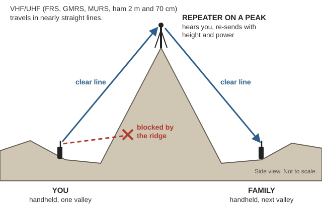
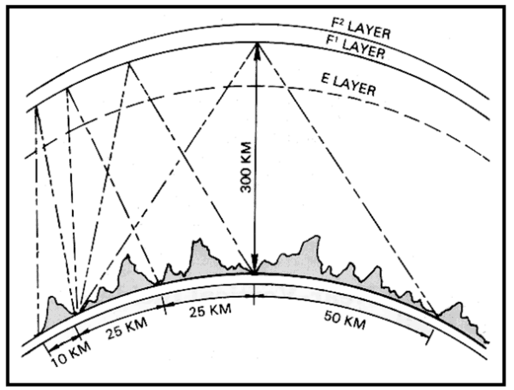
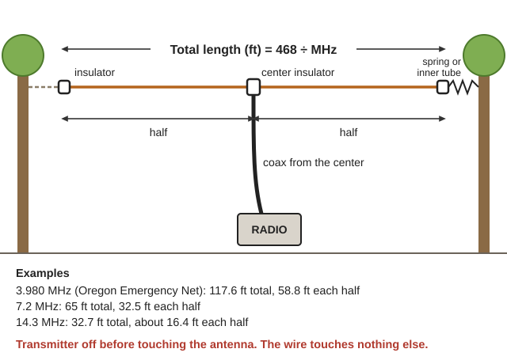
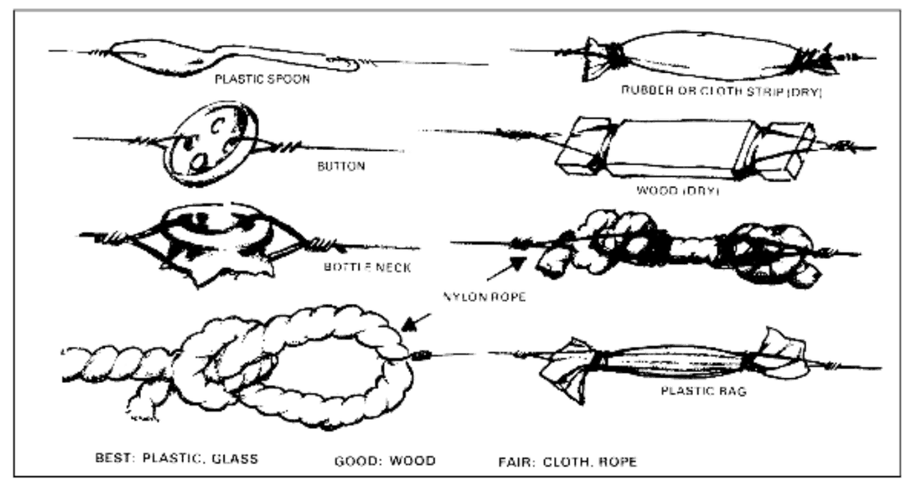

Guides › Radio, community & protection · Emergency · Index A–Z
This guide explains, in plain language, how to communicate by radio when the internet and phones are down. It covers what each type of radio is, what it can do, which frequencies/channels matter in an emergency, and the basic procedures for calling for help.
Legal note (normal times): Transmitting on ham (amateur) frequencies requires a license (easy to get — see below). GMRS requires a cheap license (no test). CB, FRS, MURS need no license. Shortwave listening needs no license (you're only receiving). In a genuine life-or-death emergency, calling for help on whatever radio you have is generally accepted (the ham rules, 47 CFR §97.405, say nothing in them stops a station in distress from using any means it has). Listening is always legal. Learn and practice before you need it.
| Need | Best tool | License | Range (typical) |
|---|---|---|---|
| Talk to family nearby (same property / neighborhood) | FRS / GMRS walkie-talkie (FRS) | FRS none; GMRS cheap | 0.5–2 mi (up to 5+ with GMRS + height) |
| Talk across town / coordinate a group | GMRS (with repeater) or Ham VHF/UHF (GMRS) | GMRS cheap; Ham test | 5–50 mi via repeater |
| Talk regionally / long distance / into other states | Ham HF (Amateur radio) | Ham (General class) | 100s–1000s mi |
| Hear news & official broadcasts from anywhere | Shortwave receiver (Shortwave radio) | none (listening) | Worldwide |
| Road / vehicle convoy, truckers | CB (Citizens band radio) | none | 1–15 mi |
| Text messages and positions between family and neighbors, passed radio to radio | Mesh radio (Mesh radio guide) | none | ¼–5 mi per hop, further with relays |
Three things everyone should know:
📚 Go deeper: ARRL ARES Field Resources Manual, p. 6 — what to do first, checklists, message forms; NOAA Weather Radio brochure — how alerts work.
The valley is ringed by mountains (Klamath Mountains): VHF/UHF needs a repeater on a peak (why: radio waves travel in straight lines), and NOAA warns that mountain valleys may get little or no weather radio even inside the usual 40-mile range (NOAA brochure, p. 3).

Valley to valley, VHF/UHF gets through by way of a repeater on a peak that both radios can see (a diagram drawn for this guide).(Club websites, Nov 2026 — verify. Full lists: Illinois Valley guide.)
📚 Go deeper: FM 24-18, p. 144 — radio in mountains; FM 24-18, p. 102 — picking a radio site; NOAA Weather Radio brochure, p. 3 — reception in valleys.
📚 Go deeper: NEETS Module 10, p. 100 — the ionosphere by day and night; NEETS Module 12 — AM, FM and SSB.
📚 Go deeper: FM 24-18, p. 55 — repairing a broken whip antenna (repair drawing); Citizens band radio — channels, history and photos.
These are the little handheld radios ("walkie-talkies"). Great for family/group.
In hill country: use high ground, get clear of buildings and leafy trees (they soak up more signal than evergreens), and keep away from power lines (good radio sites; poor radio sites).
📚 Go deeper: FM 24-18, p. 102 — choosing a good radio spot; Walkie-talkie — photos of handheld radios.
Ham radio is the backbone of emergency communications. When everything else fails, hams relay health-and-welfare traffic, weather, and coordination across towns, states, and continents (Amateur radio; Amateur radio emergency communications).
Three license levels, each a multiple-choice test (questions are public — you can study the exact pool):
Get at least a Technician license now while it's easy, and ideally General so you can use HF for long distance. In a true life-or-death emergency, calling for help without a license is generally accepted (see 47 CFR §97.405) — but you'll be far more effective if you've practiced.
A repeater is a radio on a tower/hilltop that receives your weak signal and re-transmits it with a big antenna and power, massively extending range. To use one you set your radio to the repeater's output frequency, an offset (so it transmits on the input), and sometimes a CTCSS "tone." Local repeater lists (and emergency nets) are worth printing out for your area (Repeater).
If repeaters are down, you talk simplex — directly, radio to radio, line of sight. The national 2m simplex calling frequency is 146.520 MHz.
Wilderness protocol: back-country hams listen and call on 146.52 for 5 minutes at the top of the hour, every 3 hours from 7 AM to 7 PM, so someone beyond a repeater can be relayed (ARRL manual, p. 84).
A wire dipole hung low — 1/10 to 1/4 of a wavelength up (roughly 25–60 ft on 80m, worked from the formula in section 8) sends its signal almost straight up; it comes back down like a fountain over a few hundred miles with no skip zone, and the hills matter much less (FM 24-18, p. 279; the "fountain" drawing; Army NVIS antennas; Near vertical incidence skywave).

NVIS: a low antenna sends HF almost straight up, and it falls back like a fountain on the stations around you, hills and all (FM 24-18, p. 283).A net is a scheduled on-air meeting. In a directed net a net control station says who talks next. Listen first, check in when invited, keep a log, and tell net control if you leave (ARRL manual, p. 7, 18).
Hams can also send text/email/images with no internet via Winlink (email over radio), FT8 (weak-signal), and APRS (position/text). Useful but needs more gear and practice (Winlink, FT8, APRS).
📚 Go deeper: ARRL manual, p. 14 — ARES, traffic nets and RACES; FM 24-18, p. 278 — NVIS in full.
📚 Go deeper: NBS Circular 120 — build a crystal set step by step; NBS Circular 121 — a sharper version.
Total length in feet = 468 ÷ MHz (3–50 MHz; FM 24-18, p. 47), cut in two equal halves with the coax at the center. 3.980 MHz (Oregon Emergency Net): 117.6 ft · 7.2 MHz: 65 ft · 14.3 MHz: 32.7 ft. Look first: center-fed wire antenna between two supports, improvised half-wave doublet, how a dipole radiates.

A half-wave dipole: total length in feet = 468 ÷ MHz, two equal halves, coax at the center (a diagram drawn for this guide).
Insulators from scraps: plastic and glass are best, dry wood good, cloth and rope only fair (FM 24-18, p. 87).For 2m/70cm, a J-pole from TV twin-lead is cheap (ARRL manual, p. 12; what twin-lead looks like; Twin-lead). Rocky mountain ground is a poor ground, so use a dipole, or a vertical with a counterpoise — wires spread just above the ground (FM 24-18, p. 144; wire counterpoise; ground-plane antenna). Set up high on a slope, not in a ravine, and away from your own generator and battery charger — they add noise (p. 102–103).
Batteries: a car battery survives only about 20 deep discharges; deep-cycle batteries take 1,000 or more, and shallow use lasts far longer (about 800 cycles at 80% discharge vs 6,000 at 20%). Recharge stored sealed batteries about every 3 months. Charging batteries give off hydrogen — no sparks or flames (Practical Action, p. 5–6).
Lightning: a lightning switch grounds the antenna whenever you're not using it — No. 14 or heavier copper wire to a water pipe or ground rod, never a gas pipe (NBS Circular 120, p. 8; Lightning arrester).
📚 Go deeper: FM 24-18, p. 55 — field repair and expedient antennas; NEETS Module 10 — how antennas work.
Alpha Bravo Charlie Delta Echo Foxtrot Golf Hotel India Juliet Kilo Lima Mike November Oscar Papa Quebec Romeo Sierra Tango Uniform Victor Whiskey X-ray Yankee Zulu. Numbers: say digits individually ("one-two-zero"). (NATO phonetic alphabet)
📚 Go deeper: ARRL manual, p. 58 — procedure words, phonetic alphabet, signal reports; Pub 102, pp. 148–149 — the international voice distress procedure, with worked Mayday examples.
Much of radio's work after a disaster is carrying short messages for people with no radio. Send in this order (ARRL manual, p. 36): EMERGENCY (life and death — when in doubt, don't) → PRIORITY (important, time-limited) → WELFARE ("Is my family OK?" / "All well here") → ROUTINE (last).
📚 Go deeper: ARRL manual, p. 33–34 — welfare form, standard texts, how to write a radiogram; ICS 213 General Message form — the standard paper form emergency offices use.
📚 Go deeper: FM 3-05.70, p. 318 — signaling devices and how to use them; Signals and Morse guide — mirrors, ground symbols, Morse by light and sound; AFH 10-644, p. 509 — the Air Force signaling chapter, with pictures.
| Problem | Try this |
|---|---|
| Nobody answers | Get higher and clear of buildings and leafy trees; hold the radio upright; try a repeater |
| Repeater ignores you | Check the offset and tone |
| Two radios won't talk | Same channel and same mode? Same privacy code on FRS? |
| HF is dead | Lower band at night, higher in daytime (rule of thumb) |
| Buzz or hum | Move away from power lines, generators, chargers (FM 24-18, p. 103) |
| Broken antenna | Splice it, or replace with wire of the same length (whip repair drawing) |
| Battery dies fast | Lower power, transmit less, listen at set times |
📚 Go deeper: FM 24-18, p. 106 — sources of interference; FM 24-18, p. 55 — field repair of antennas, guys and masts.
📚 Go deeper: ARRL manual, p. 10–12 — basic and 72-hour go-kit checklists; Amateur Radio Emergency Service — how volunteer emergency hams are organized.
Fill in your group's agreed channels and local repeaters, then print this page.
===================== EMERGENCY RADIO CARD =====================
Our group PRIMARY channel : _______________ Mode: _______
Our group BACKUP channel : _______________ Mode: _______
Check-in times (daily) : _______ _______ _______
CB emergency / help ....... Channel 9
CB highway / travel ....... Channel 19
Ham 2m simplex calling .... 146.520 MHz (FM)
Wilderness protocol ....... 146.520 - 5 min at top of hour,
every 3 hrs, 7 AM to 7 PM
NOAA Weather Radio ........ 162.400 / 162.425 / 162.450 /
162.475 / 162.500 / 162.525 / 162.550 MHz
FRS/GMRS family channel ... _______ (GMRS license #: __________)
Local repeaters (output / offset / tone):
1) ________ MHz / ____ / tone ______ (____________)
2) ________ MHz / ____ / tone ______ (____________)
3) ________ MHz / ____ / tone ______ (____________)
Distress voice: "MAYDAY x3" (life threat) or "PAN-PAN x3" (urgent)
Say: WHO you are - WHERE you are - WHAT's wrong - WHAT you need
No radio? Three fires / three shots / ground symbols V and X
==================================================================📚 Go deeper: ARRL manual, p. 59 — a phonetic alphabet to print alongside; NOAA Weather Radio brochure, p. 2 — how the broadcasts and SAME county codes work, with station frequencies.
E:\OfflineLibrary\Manuals\, via the Kiwix reader) include antenna, electronics and repair articles.Southern-Oregon\Electronics-Repair\ and Southern-Oregon\Radio-Weather\: FM 24-18, the Navy NEETS modules, the ARRL field manual (links above).E:\OfflineLibrary\Medical\) for treating injuries while you wait for help — start with the Medical guide.Practice now: tune around, learn your radios' menus, program the channels above, and do a test check-in with your group. Skills and muscle memory matter more than gear.
📚 Go deeper: NEETS Module 17 — how radio systems work; NASA hand soldering workbook — repairing radios and cables.
Look before you try it. 🖼️ = drawings in the books on this drive; 📷 = photos in the offline Wikipedia.
How radio travels
The radios
Antennas you can build
Siting and repair
Calling for help and passing messages